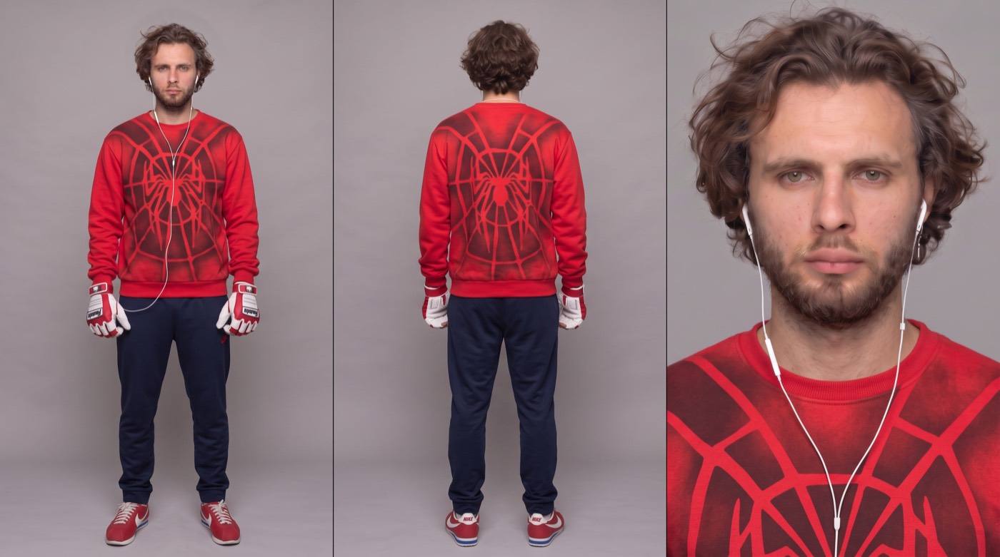

Видео с собой
по карте глубины
Самая частая проблема генерации — модель не умеет в сложную хореографию: прыжки, полёты, драки выходят вялыми. Решение — не описывать движение словами, а подать его готовым. Карта глубины задаёт, как двигается тело и камера. Карта героя задаёт, кто это. На выходе — ты в главной роли.
Обрати внимание: движение совпадает кадр в кадр. Модель ничего не придумывает — она переодевает готовую хореографию.
- Карта героя — лист из трёх панелей: фронт, спина, лицо крупно. Делается один раз и работает во всех твоих роликах.
- Карта глубины — ч/б ролик с нужным движением. Мою можно скачать ниже и сразу попробовать.
- Видеомодель, которая принимает и то и другое — Seedance 2.5 или другой генератор с поддержкой видео-референса.
Карта героя
Три панели на сером фоне: фронт, спина, лицо крупно. Это «паспорт» персонажа — по нему модель держит лицо и костюм от кадра к кадру. Загрузи своё фото как @image1, а костюм опиши словами в квадратных скобках: можно хоть человека-паука, хоть рыцаря, хоть свой обычный образ.

Three-panel character reference sheet on a flat neutral grey seamless studio backdrop, shadowless even light, no cast shadow on the floor. Panel 1 (left): full-body front view, standing straight, arms relaxed at the sides, looking into the camera. Panel 2 (centre): the same person seen from directly behind, full body, standing straight, arms relaxed. Panel 3 (right): chest-up close-up of the face, looking straight into the camera, neutral expression. FACE AND HAIR: exactly matches @image1 — same face, same hair, same beard, same eye colour. Do not restyle, do not idealise, do not change age. WARDROBE (identical in all three panels): [ОПИШИ СВОЙ КОСТЮМ — цвет, крой, принт, обувь, перчатки, аксессуары. Пример: a red crew-neck sweatshirt with a large dark spider and web print across the chest and back, navy blue track pants, red and white running sneakers, white and red batting gloves on both hands, white wired earphones]. STYLE: photoreal studio photography, sharp fabric texture — visible weave and stitching, natural skin texture with pores, strand-by-strand hair. Neutral colour, no grade, no vignette, no lens flare. OUTPUT: horizontal 16:9, the three panels separated by thin vertical dividers.
Карта глубины
Карта глубины — это обычный ролик, прогнанный через depth-модель: всё близкое становится белым, всё далёкое — чёрным. Внешность стирается, остаётся чистая геометрия движения. Именно поэтому модель повторяет прыжок и полёт точь-в-точь, а не «примерно как».
- Скачать мою — кнопка ниже. Двадцать секунд полёта между небоскрёбами, готово к работе.
- Сделать из своего видео — снимаешь движение на телефон и прогоняешь через depth-препроцессор (Depth Anything или MiDaS — они есть в ComfyUI и в большинстве агрегаторов).
- Взять чужой ролик как основу — подойдёт любой кадр с нужной динамикой: карта глубины забирает из него только траекторию, не картинку.
Промпт
Тот самый промпт, которым сделан ролик выше. Ключевая строка — «ignoring its black-and-white visual style»: без неё модель решит, что ты хочешь ч/б картинку, и отдаст серую кашу вместо Нью-Йорка.
Base the character's movements entirely on the provided video (@ Depth map video) — ignoring its black-and-white visual style — and set the scene in New York City, cloudy weather. Vibrant colors. Model the character exactly after the reference image I uploaded (@ Your character sheet); have him running at first and leap from a skyscraper and swing between the city's high-rises using webs shot from his wrists.
Шаблон под себя
Тот же промпт с пустыми полями. Меняешь локацию и действие — каркас остаётся. На одной карте глубины можно собрать хоть десять разных роликов: тот же полёт, но ночью в Токио, в каньоне или над своим городом.
Base the character's movements entirely on the provided video (@ Depth map video) — ignoring its black-and-white visual style — and set the scene in [ЛОКАЦИЯ: e.g. New York City, cloudy weather / a neon-lit Tokyo street at night / a desert canyon at sunset]. Vibrant colors. Model the character exactly after the reference image I uploaded (@ Your character sheet); have him [ДЕЙСТВИЕ СВОИМИ СЛОВАМИ: what he does, in order — e.g. running at first and then leaping from a rooftop].
- Движение совпало. Открой оба ролика рядом. Если траектория «примерно похожа» — карта глубины слишком тёмная или контрастная, перегони исходник.
- Лицо не поплыло. На быстрых кадрах модель первым делом теряет лицо. Лечится только перегенерацией, не правкой.
- Костюм совпадает с картой героя. Цвет перчаток, принт, обувь — модель любит «доработать» детали. Сверяй с листом.
- Один человек в кадре. На широких планах в фон лезут лишние фигуры. Проверяй каждую генерацию целиком, а не по первым секундам.
 ▶
▶
Хочешь снимать такое на заказ?
Карта глубины — один приём из десятков. На обучении даю систему целиком: от первой генерации до портфолио, упаковки и первых клиентов. Приходи на экскурсию — покажу платформу изнутри и работы учеников, разберу твою ситуацию. Ничего продавать не буду.
Записаться на экскурсию → Бесплатно · созвон 30–40 минут · места ограничены